Bee Hive
In the backyard of the house stands a bee hive where about 30,000 honey bees reside. During the warmer months our honey bees fly around and pollinate the local plants and in the winter they huddle together to stay warm. The bees create honey for themselves to eat in the winter and any excess honey will be collected by the house. Although some tenants may jokingly say we have to take the bees for walks everyday, the upkeep of the bees is actually fairly simple. A bucket of sugar water is set outside to supplement pollen as a food source during warm months and dry sugar along with mite protection medicine is provided inside the hive in the winter. When it is nice outside we enjoy watching the busy bees race around the yard.
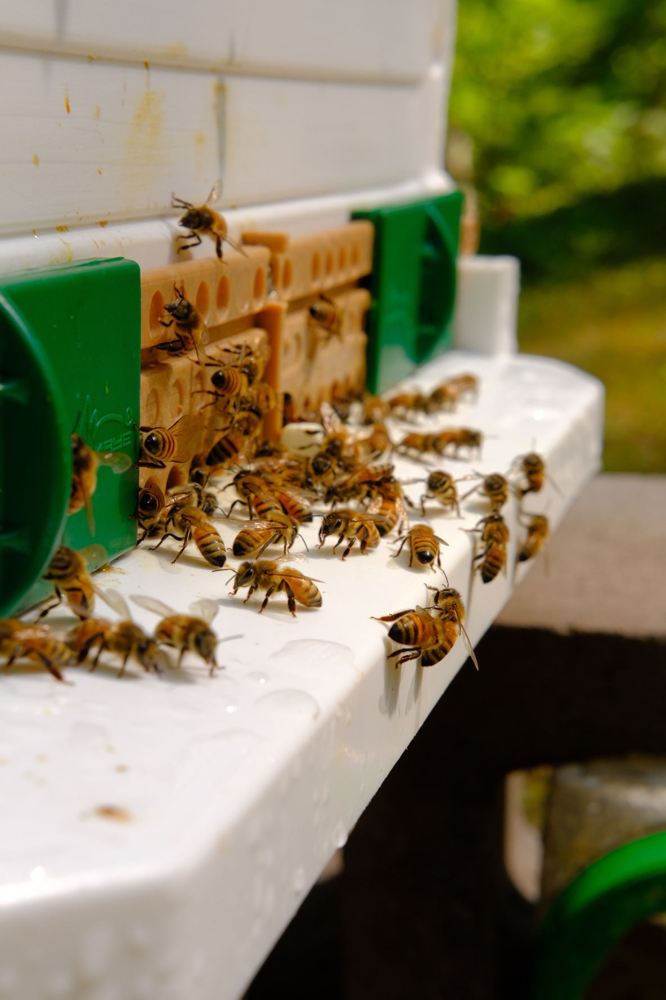Aquaponics
Our aquaponics system was designed and built by a former tenant. Some main components of our system include: fish tank, grow bed, clay pellet media, siphon, pump, water tank, grow lights, and of course, plants. The system is self-sustaining, all we add is fish food. The fish produce ammonia which then gets pumped into the grow bed. The grow bed contains clay pellet media in which nitrifying bacteria convert the ammonia to nitrite, then to nitrate. This nitrate is then taken up by the plants as nutrients.
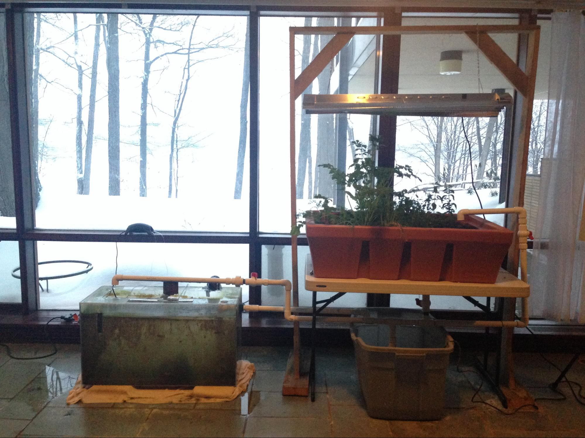Hydroponics
The hydroponics system was created by one of our tenants. It is completely made from pvc piping with a wooden frame. This system holds plants in each of the openings within the pipes and the roots hang through the pipes. Water is continuously cycled through the pipes to ensure enough water is getting to the plants. This system uses 95% less water than a typical garden. We add water once a week to account for possible evaporation and nutrients to help the plants flourish! A very low maintenance system with very high reward!
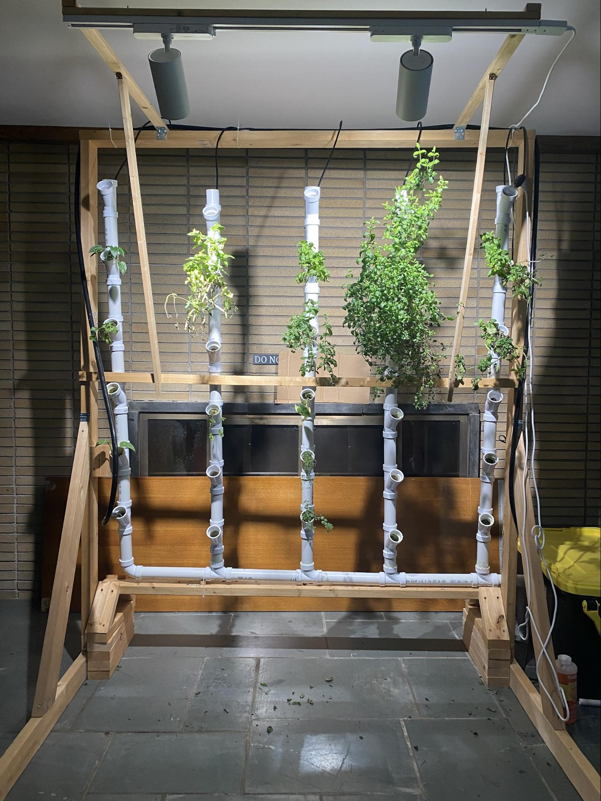 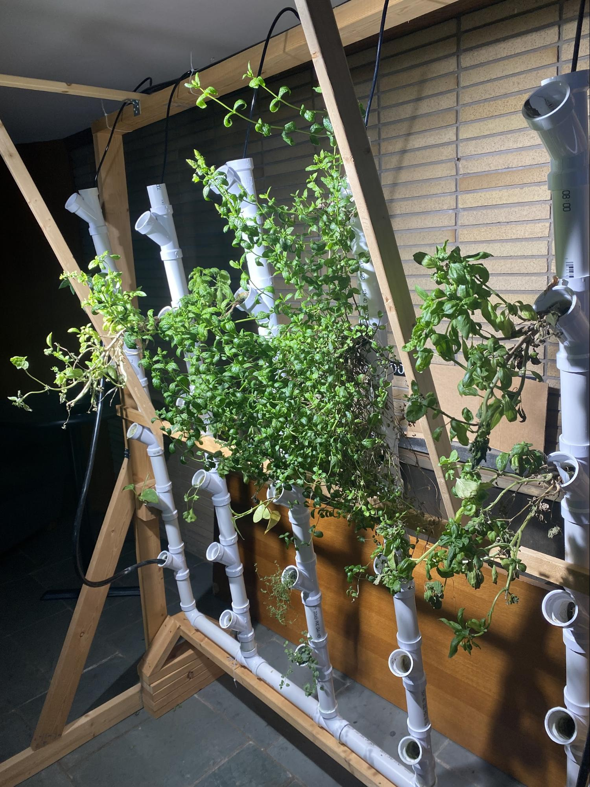Lettuce Grow
Our Lettuce Grow system was donated to us in the Spring of 2021. This farmstand is a self-watering, self-fertilizing system that can grow plants without soil. This system consists of small planters that are watered continuously with a water system within, therefore using 95% less water than a typical garden. We simply add nutrients, check the pH and add water once a week (because of evaporation) and we have fresh fruits and vegetables in no time. Plus, all the material is made from recycled ocean plastics. If you are interested, use our code FRIEND_181C to get $50 off your Lettuce Grow system!
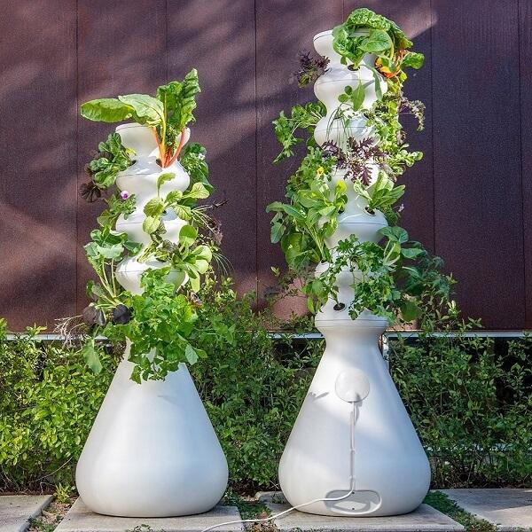Outdoor Compost
Our outdoor composting system is the largest composting system at the SDH. This system was designed and built by SDH tenants in the fall of 2017. The bin is sectioned into three parts. The first is the fresh bin, this is where we add our fresh kitchen scraps and yard waste. The center section is the incubation bin, once the scraps in the fresh bin start to break down, we transfer them to the incubation bin where the majority of the chemical and physical breakdown occurs. The third section is called the final product bin, once the contents of the incubation bin are completely broken down, they are transferred to this bin. The contents of this bin are officially fertilizer and can be used directly on a garden or lawn. Common items that can be put into the outdoor compost bin include: fruits & vegetables scraps, egg shells, coffee grounds, cardboard and paper, grass clippings, leaves, and fruit pits. Items that should not go into the compost bin: dairy, meat, bread & pastas, sweets, processed foods, foods cooked in oil, sawdust from treated wood, feces, and fruit stickers. 50%-60% of our daily waste output goes into our compost bin. Our compost typically takes one full year to break down into usable fertilizer. This is due to our long winters which greatly slow down the composting process. Why do we compost? When food scraps are sent to a landfill they do not get the oxygen needed for the microorganisms to survive and properly break down the material. When food breaks down without the presence of oxygen, it releases methane which is 20 times more potent than carbon dioxide.
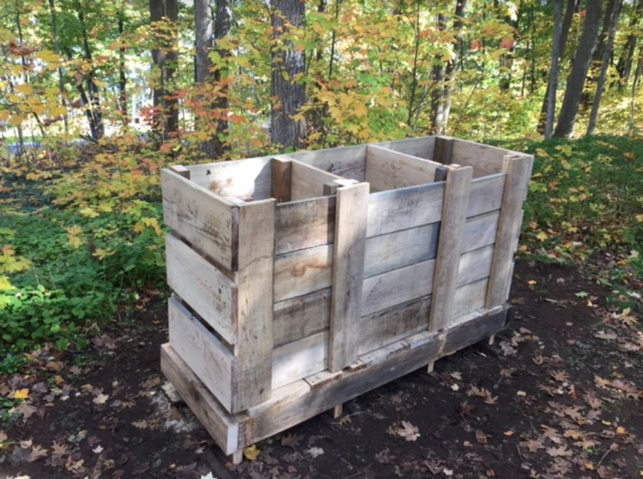Vermicompost
Even if you don’t have a garden, you can still divert food waste! Our vermicompost was implemented by one of our tenants in the Fall of 2020. Vermicomposting is a small-scale method for sustainably decomposing organic waste materials at home. Worms eat our food scraps and in turn provide us with a great organic fertilizer that can be used in our garden! Vermicompost systems are advantageous because of their small size and versatility in terms of location. They are accessible to many, especially those in urban areas who live in apartments, don't have yards, or are otherwise space-constrained. Providing an alternative to composting that allows an indoor operation, vermicompost systems are a creative and simple way to divert your food waste from landfill and reduce your environmental impact!


HDPE Recycling
Most plastic that gets put in the recycling still ends up in landfills. High-density polyethylene (HDPE) is one of those plastics. Although it can and is recycled at some recycling facilities, recycling the plastic yourself is a better bet to make sure it doesn’t end up in landfills. It’s super easy to do, just heat up an oven to 130 F and once the plastic is hot enough you will be able to mold it into any shape you want. We currently make plastic planters, house numbers, and bricks from our HDPE waste.
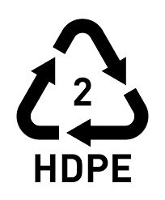Paper Recycling
We noticed that there are many paper items that cannot be recycled in our curbside recycling. With recycling our own paper we are able to experiment with a wider variety of different papers. To recycle paper in the house, we start with old, used paper. The paper has to be cut into smaller pieces to make the blending process easier. Once cut, the pieces are soaked in water overnight. The mostly drained paper is then blended in a blender and blended to create a pulp. The pulp is then added to a bucket. To form the paper from the pulp, we use a mold and deckle. This is scooped into the pulp and the excess water runs off. We press the formed pulp with a sponge to remove more excess water then press it pulp side down onto a towel. Lastly, we roll over the paper with a rolling pin to press it flat and let it dry overnight. Once dry we can peel up our fresh handmade paper! Paper making is a fun way to give old paper a new life.
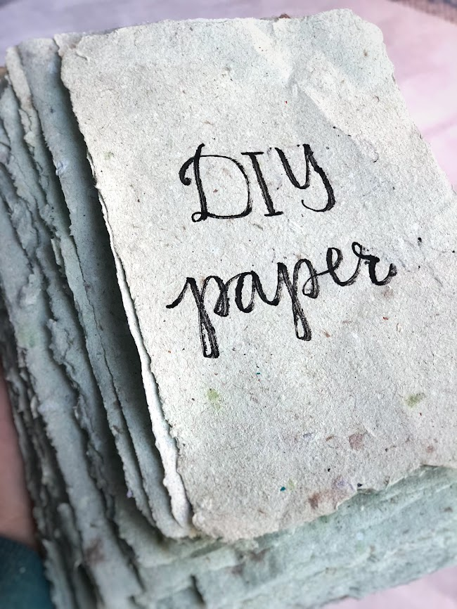Outdoor Garden
Even in the snowy U.P, we can grow our own food outside, while also providing habitat for bees and butterflies! In 2018 one of the tenants built a raised bed garden that grows a variety of fruits and vegetables. By raising the garden bed, the plants are more insulated from the cold therefore extending the growing season. The raised garden bed also has a smart rainwater system that includes a moisture content sensor that allows water to flow from our rain barrel to our garden. In the Summer of 2021, a tenant planted a native garden around the yard to support bee and butterfly populations!
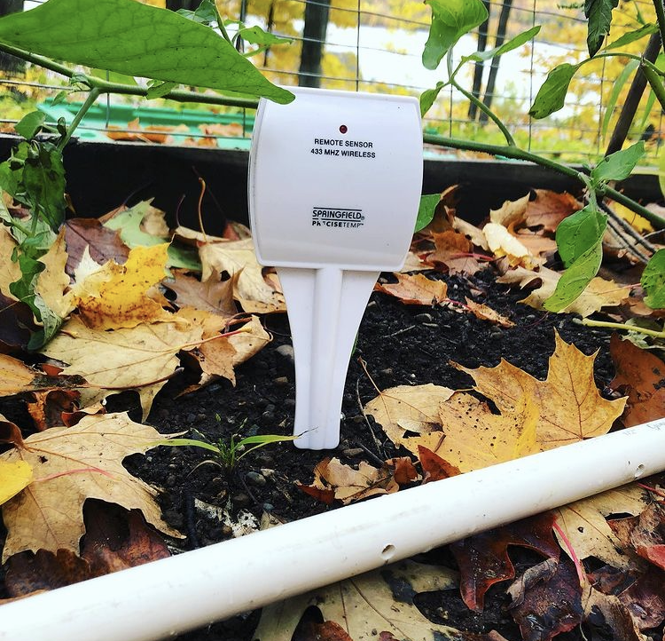Rain Barrel
All of the water that hits a rooftop flows into gutters. Collect water that hits the rooftop of our garage in a rain barrel. We use this water to water plants and other tasks around the yard.
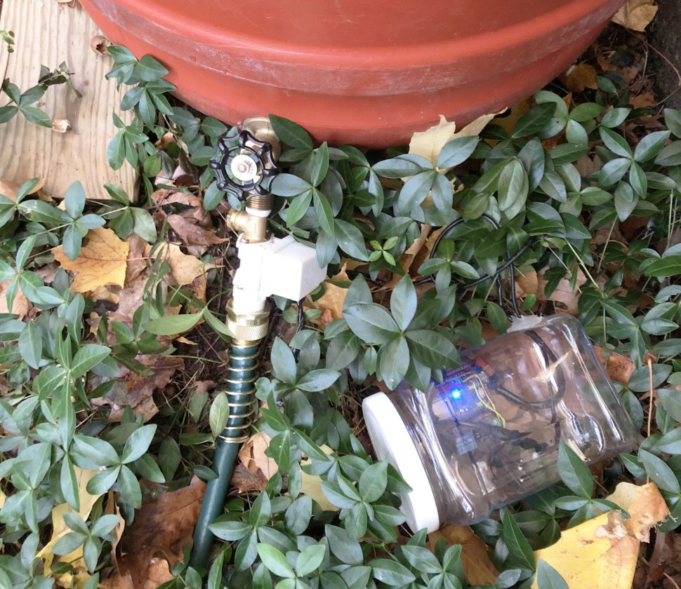Efficient Appliances in Kitchen
The house has received numerous donations from various companies. Some of our favorite donations are located in our kitchen and were given to us from Whirlpool. One of the most used appliances would be our induction cooktop, this heats the metal pans by an oscillating magnetic field which transfers the electric current directly to the pot or pan. This means if a hand was placed on the stove and it was then turned on it would not feel hot to the touch. This form of cooktop saves 75% more energy than the typical electric stove while heating and cooling much quicker as well. Our ovens can save energy by the auto shut off feature for when the food timer goes off or they can be remotely shut off through an app. The fridge uses led lighting which saves energy and keeps food fresher longer. In a study done by tenants, using the dishwasher saves more water than if everything were to be washed by hand, so we try to use the dishwasher whenever possible.
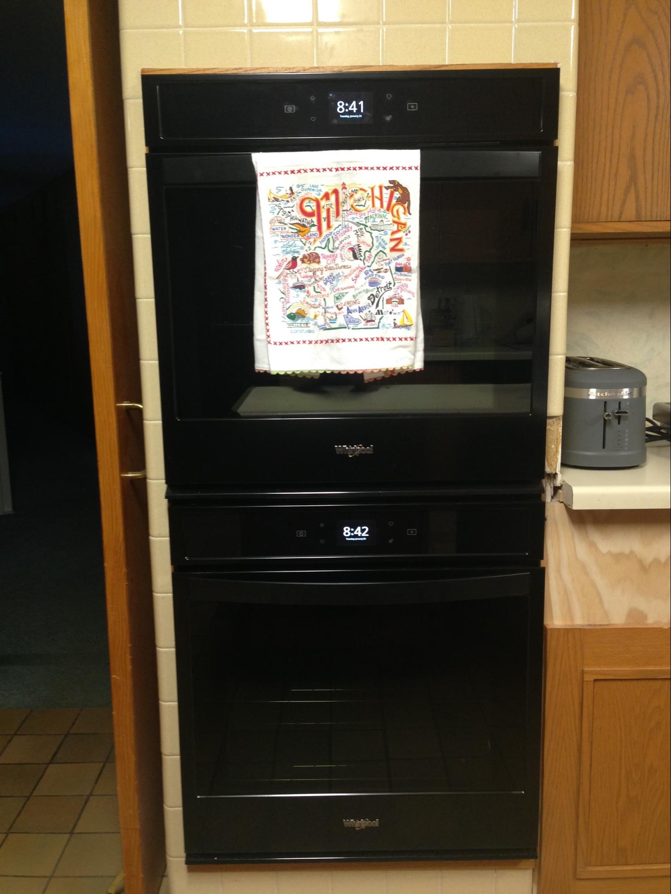 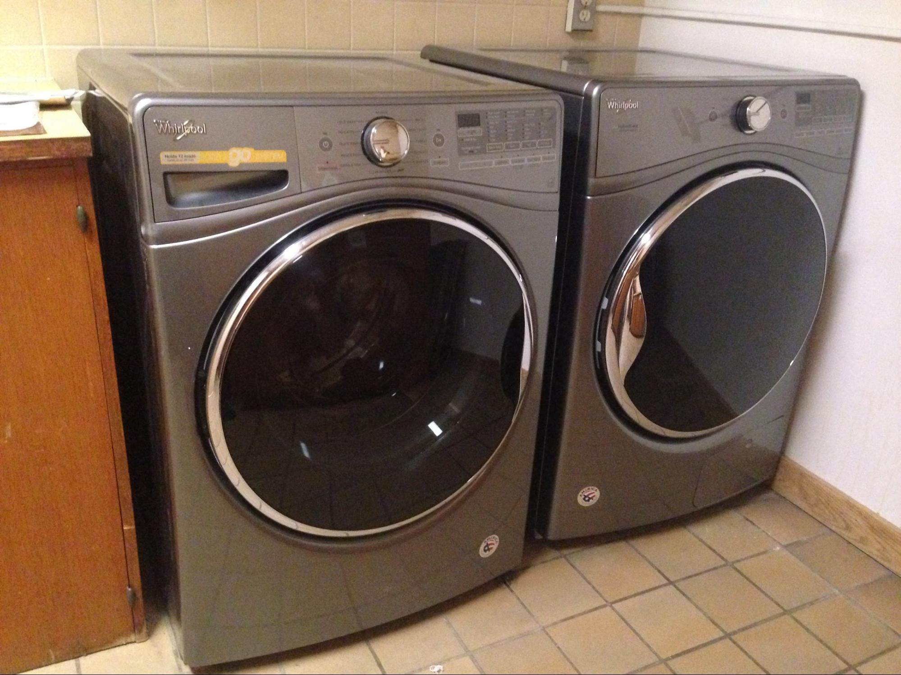Waste Output
We keep track of all the waste we produce by weighing it before it is properly disposed of. The majority of our waste can be sorted into three categories: compost, recycling, and landfill. We have two composting systems in the house: an outdoor compost bin and vermicompost. Any excess compost is brought to Apple Acres Farm where it is fed to chickens. We have typical curbside recycling at our residence, but there are many items that this collection excludes. These include Tetra Pak cartons, bottle caps, dental products and many more. These items will be collected, sorted, and shipped out to different companies that process them. Plastic bags and plastic wrap also cannot be recycled curbside. Plastic bags, bread bags, newspaper bags, and other stretchy plastic are brought to local grocery stores that have plastic bag collections. Other flexible plastics including ….. we stuff into 2-liter bottles until they are so dense that you can squish them and they become eco-bricks. We are almost a zero-landfill house. We do our best to find a sustainable.

Solar Array
We have a 8.6 kwH solar array that provides electricity to the house. It is located in Lot 10, which is visible right as you enter Houghton on US-41. Conduit under bedrock to house 2 lithium batteries
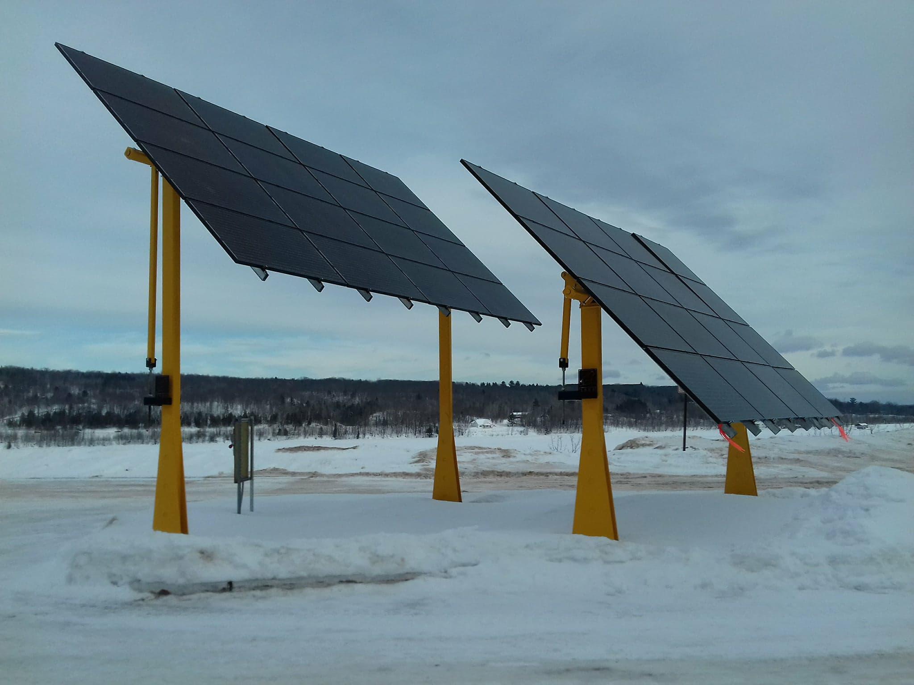